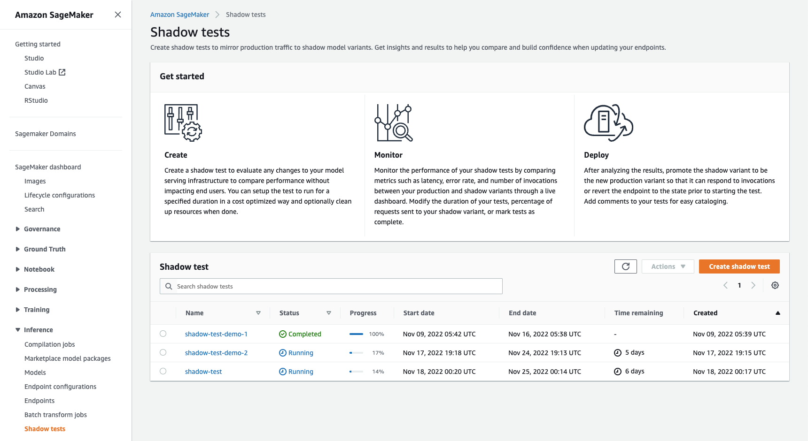
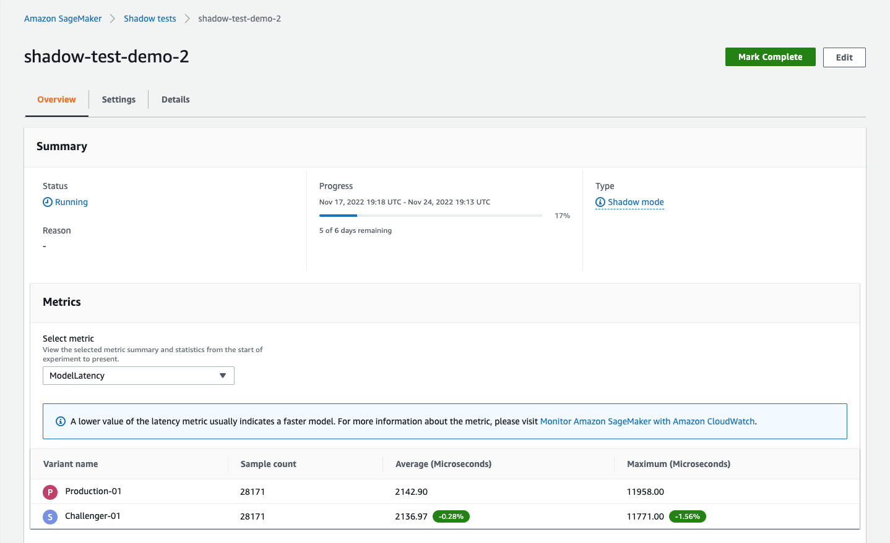
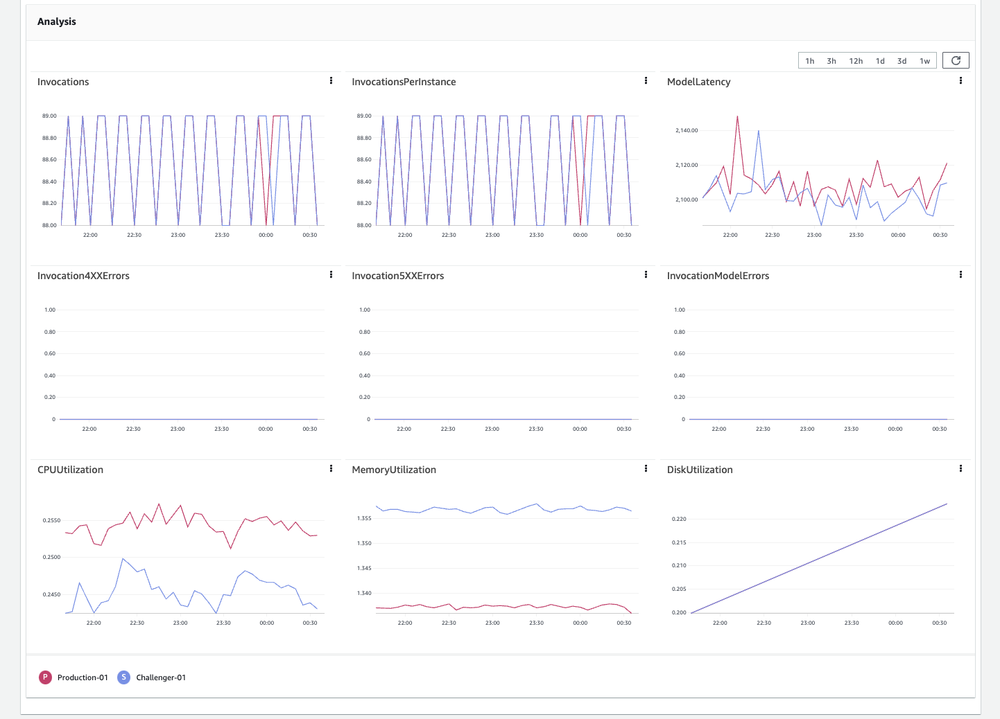
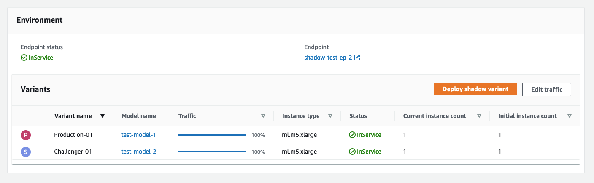

View, monitor, and edit shadow tests
You can view the statuses of your shadow tests, monitor their progress from a dashboard, and perform actions, such as starting or stopping an test early or deleting an test. The following sections show how you can view and modify your shadow tests using the SageMaker console.
Topics
View shadow tests
You can view the statuses of all of your shadow tests on the Shadow tests page on the SageMaker console.
To view your tests in the console, do the following:
-
Open the SageMaker console
. -
In the navigation panel, choose Inference.
-
Choose Shadow tests to view the page that lists all of your shadow tests. The page should look like the following screenshot, with all the tests listed under the Shadow test section.

You can see the status of a test in the console on the Shadow tests page by checking the Status field for the test.
The following are the possible statuses for a test:
-
Creating– SageMaker is creating your test. -
Created– SageMaker has finished creating your test, and it will begin at the scheduled time. -
Updating– When you make changes to your test, your test shows as updating. -
Starting– SageMaker is beginning your test. -
Running– Your test is in progress. -
Stopping– SageMaker is stopping your test. -
Completed– Your test has completed. -
Cancelled– When you conclude your test early, it shows as cancelled.
Monitor a shadow test
You can view the details of a shadow test and monitor it while it is in progress or after it has completed. SageMaker presents a live dashboard comparing the operational metrics like model latency, and error rate aggregated, of the production and shadow variants.
To view the details of an individual test in the console, do the following:
-
Select the test you want to monitor from the Shadow test section on the Shadow tests page.
-
From the Actions dropdown list, choose View. An overview page with the details of the test and a metrics dashboard appears.
The overview page has the following three sections.
- Summary
-
This section summarizes the progress and status of the test. It also shows the summary statistics of the metric chosen from the Select metric dropdown list in the Metrics subsection. The following screenshot shows this section.
In the preceding screenshot, the Settings, and Details tabs show the settings that you selected, and the details that you entered when creating the test.
- Analysis
-
This section shows a metrics dashboard with separate graphs for the following metrics:
InvocationsInvocationsPerInstanceModelLatencyInvocation4XXErrorsInvocation5XXErrorsInvocationModelErrorsCPUUtilizationMemoryUtilizationDiskUtilization
The last three metrics monitor the model container runtime resource usage. The rest are CloudWatch metrics that you can use to analyse the performance of your variant. In general, fewer errors indicate a more stable model. A lower latency indicates either a faster model or a faster infrastructure. For more information about CloudWatch metrics, see SageMaker Endpoint Invocation Metrics. The following screenshot shows the metrics dashboard.
 - Environment
-
This section shows the variants that you compared in the test. If you are satisfied by the performance of the shadow variant, based on the aforementioned metrics, you can promote the shadow variant to production, by choosing Deploy shadow variant. For more details about deploying a shadow variant, see Promote a shadow variant. You can also change the traffic sampling percentage, and continue testing, by choosing Edit traffic. For more details about editing a shadow variant, see Edit a shadow test. The following screenshot shows this section.

Start a shadow test early
You can start your test before its scheduled start time. If the new duration of the test exceeds 30 days, SageMaker automatically sets the end of the test to 30 days after the new start time. This action starts the test immediately. If you want to change the start or end time of the test, see Edit a shadow test.
To immediately start your test, before its scheduled start time, through the console, do the following:
-
Select the test you want to start immediately from the Shadow test section on the Shadow tests page.
-
From the Actions dropdown list, choose Start. The Start shadow test? dialog box appears.
-
Choose Start now.
Complete a shadow test early
You can complete an in-progress test before the end of its scheduled duration. For more information see Complete a shadow test early.
Delete a shadow test
You can delete a test that you no longer need. Deleting your test only deletes the test metadata and not your endpoint, variants, or data captured in Amazon S3. If you want your endpoint to stop running, you must delete your endpoint. For more information about deleting an endpoint, see Delete Endpoints and Resources
To delete a test through the console, do the following:
-
Select the test you want to delete from the Shadow test section on the Shadow tests page.
-
From the Actions dropdown list, choose Delete. The Delete shadow test dialog box appears.
-
In the To confirm deletion, type delete in the field. text box, enter
delete. -
Choose Delete.
Edit a shadow test
You can modify both scheduled and in-progress tests. Before your test starts, you can change the description, the shadow variant configuration, the start date, and the end date of the test. You can also turn on or turn off data capture.
After your test starts, you can only change the description, the traffic sampling percentage for the shadow variant, and the end date.
To edit the details of your test through the console, do the following:
-
Select the test you want to edit from the Shadow test section on the Shadow tests page.
-
From the Actions dropdown list, choose Edit. The Enter shadow test details page appears.
-
(Optional) Under Description, enter a description of your test.
-
Choose Next. The Enter shadow test settings page appears.
-
(Optional) To edit your shadow variant, do the following:
-
Select the shadow variant and choose Edit. The Edit shadow variant dialog box appears. If your test has already started, then you can only change the traffic sampling percentage.
-
(Optional) Under Name, enter the new name to replace the old name.
-
(Optional) Under Traffic sample, enter the new traffic sampling percentage to replace the old traffic sampling percentage.
-
(Optional) Under Instance type, select the new instance type from the dropdown list.
-
(Optional) Under Instance count, enter the new instance count to replace the old instance count.
-
Choose Apply.
You cannot change the model in your shadow variant using the above procedure. If you want to change the model, first remove the shadow variant by selecting it and choosing Remove. Then add a new shadow variant.
-
-
(Optional) To edit the duration of the test, do the following:
-
Choose the box under Duration in the Schedule section. A popup calender appears.
-
If your test is yet to start, you can change both the start and end dates. Select the new start and end dates from the calender, or enter the new start and end dates under Start date and End date, respectively.
If your test has already started, you can only change the end date. Enter the new end date under End date.
-
(Optional) If your test is yet to start, you can change both the start and end times. Enter the new start and end times under Start time, and End time, respectively, in the 24 hour format.
If your test has already started, you can only change the end time. Enter the new end time under End time, in the 24 hour format.
-
Choose Apply.
-
-
(Optional) Turn on or turn off Enable data capture.
-
Choose Update shadow test.